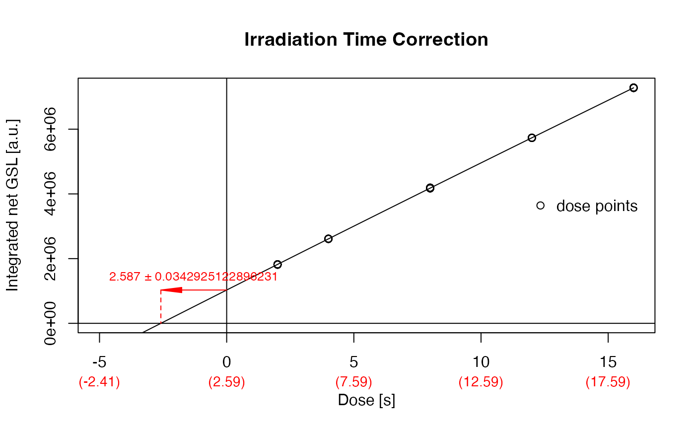

The function provides a very particular analysis to correct the irradiation time while irradiating Al2O3:C chips in a luminescence reader.
RLum.Analysis or list (required): results obtained from the measurement. <<<<<<< HEAD Alternatively a list of 'RLum.Analysis' objects can be provided to allow an automatic analysis.
numeric (optional): signal integral, used for the signal and the background. If nothing is provided the full range is used. Argument can be provided as list.
numeric (with default): vector with dose points, if dose points are repeated, only the general pattern needs to be provided. Default values follow the suggestions made by Kreutzer et al., 2018. Argument can be provided as list.
character (with default): input curve selection, which is passed to
function get_RLum. To deactivate the automatic selection set the argument to NULL
character (with default): input curve selection, which is passed to
function get_RLum. To deactivate the automatic selection set the argument to NULL
list (optional): optional parameters to control the calculation. See details for further explanations
logical (with default): enable/disable verbose mode
logical (with default): enable/disable plot output
further arguments that can be passed to the plot output
Function returns results numerically and graphically:
-----------------------------------[ NUMERICAL OUTPUT ]
-----------------------------------RLum.Results-object
slot:@data
| Element | Type | Description |
$data | data.frame | correction value and error |
$table | data.frame | table used for plotting |
$table_mean | data.frame | table used for fitting |
$fit | lm or nls | the fitting as returned by the function plot_GrowthCurve |
slot:@infoThe original function call
------------------------[ PLOT OUTPUT ]
------------------------
Function returns results numerically and graphically:
-----------------------------------
[ NUMERICAL OUTPUT ]
-----------------------------------
RLum.Results-object
slot:
@data
| Element | Type | Description |
$data | data.frame | correction value and error |
$table | data.frame | table used for plotting |
$table_mean | data.frame | table used for fitting |
$fit | lm or nls | the fitting as returned by the function plot_GrowthCurve |
slot:
@info
The original function call
------------------------
[ PLOT OUTPUT ]
------------------------
A dose response curve with the marked correction values
Background: Due to their high dose sensitivity Al2O3:C chips are usually irradiated for only a very short duration or under the closed beta-source within a luminescence reader. However, due to its high dose sensitivity, during the movement towards the beta-source, the pellet already receives and non-negligible dose. Based on measurements following a protocol suggested by Kreutzer et al., 2018, a dose response curve is constructed and the intersection (absolute value) with the time axis is taken as real irradiation time.
method_control
To keep the generic argument list as clear as possible, arguments to allow a
deeper control of the method are all preset with meaningful default parameters and can be
handled using the argument method_control only, e.g.,
method_control = list(fit.method = "LIN"). Supported arguments are:
| ARGUMENT | FUNCTION | DESCRIPTION |
mode | plot_GrowthCurve | as in plot_GrowthCurve; sets the mode used for fitting |
fit.method | plot_GrowthCurve | as in plot_GrowthCurve; sets the function applied for fitting |
0.1.1
Kreutzer, S., 2022. analyse_Al2O3C_ITC(): Al2O3 Irradiation Time Correction Analysis. Function version 0.1.1. In: Kreutzer, S., Burow, C., Dietze, M., Fuchs, M.C., Schmidt, C., Fischer, M., Friedrich, J., Mercier, N., Philippe, A., Riedesel, S., Autzen, M., Mittelstrass, D., Gray, H.J., Galharret, J., 2022. Luminescence: Comprehensive Luminescence Dating Data Analysis. R package version 0.9.19. https://CRAN.R-project.org/package=Luminescence
=======Kreutzer, S., 2022. analyse_Al2O3C_ITC(): Al2O3 Irradiation Time Correction Analysis. Function version 0.1.1. In: Kreutzer, S., Burow, C., Dietze, M., Fuchs, M.C., Schmidt, C., Fischer, M., Friedrich, J., Mercier, N., Philippe, A., Riedesel, S., Autzen, M., Mittelstrass, D., Gray, H.J., Galharret, J., 2022. Luminescence: Comprehensive Luminescence Dating Data Analysis. R package version 0.9.20. https://CRAN.R-project.org/package=Luminescence
>>>>>>> dev_0.9.20Kreutzer, S., Martin, L., Guérin, G., Tribolo, C., Selva, P., Mercier, N., 2018. Environmental Dose Rate Determination Using a Passive Dosimeter: Techniques and Workflow for alpha-Al2O3:C Chips. Geochronometria 45, 56-67. doi: 10.1515/geochr-2015-0086
##load data
data(ExampleData.Al2O3C, envir = environment())
##run analysis
analyse_Al2O3C_ITC(data_ITC)
=======
##load data
data(ExampleData.Al2O3C, envir = environment())
##run analysis
analyse_Al2O3C_ITC(data_ITC)
>>>>>>> dev_0.9.20
#>
#> [analyse_Al2O3C_ITC()]
#>
#> Used fit: EXP
<<<<<<< HEAD
#> Time correction value: 2.587 ± 0.0342925122896231
=======
#> Time correction value: 2.587 ± 0.034
>>>>>>> dev_0.9.20
#>

#>
#> [RLum.Results-class]
#> originator: analyse_Al2O3C_ITC()
#> data: 4
#> .. $data : data.frame
#> .. $table : data.frame
#> .. $table_mean : data.frame
#> .. $fit : nls
#> additional info elements: 1
<<<<<<< HEAD
=======
>>>>>>> dev_0.9.20